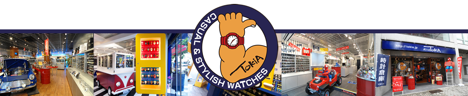

<!DOCTYPE html>
<head>
  <meta charset="utf-8">
  <title>TOKIA楽天テスト</title>
  <link rel="stylesheet" href="stylesheet.css">
</head>

<body>
	<footer>
		
		<div class="shopbox">
			<div class="shoplist clearfix">
				<dl>
			    	<dt>東京本店</dt>
			    	<dd>〒150-0001 東京都渋谷区神宮前6-27-8<br/>
			         TEL 03-6452-6430</dd>
			    </dl>

			    <dl>
			    	<dt>原宿店</dt>
			    	<dd>〒150-0001 東京都渋谷区神宮前4-26-35<br/>
			          TEL 03-6447-4910</dd>
			    </dl>

			    <dl>
			    	<dt>TOKIA+南町田グランベリーパーク店<br />
			    	<dd>〒194-8589 東京都町田市鶴間3-4-1 南町田グラン<br />
			          ベリーパーク2F 　TEL 042-706-9460</dd>
			    </dl>

			    <dl>
			    	<dt>TOKIA+レイクタウンmori店</dt>
			    	<dd>〒343-0828 埼玉県越谷市レイクタウン3-1-1<br />
			          TEL 048-971-8560</dd>
			    </dl>

			    <dl>
			    	<dt>栄中央店</dt>
			    	<dd>〒460-0008 愛知県名古屋市中区栄3-7-9 新鏡栄<br />
			          ビル1F 　TEL 052-746-9870</dd>
			    </dl>

			    <dl>
			    	<dt>名駅サンロード店</dt>
			    	<dd>〒450-0002 愛知県名古屋市中村区名駅4-7-25先 　
			          TEL 052-485-8240</dd>
			    </dl>

			    <dl>
			    	<dt>中部国際空港セントレア店<br />
			    	<dd>〒479-0881 愛知県常滑市セントレア1-1 中部国際
			          空港4F 　TEL 0569-47-5950</dd>
			    </dl>


			  	<dl>
			    	<dt>心斎橋筋店</dt>
			    	<dd>〒542-0085  大阪府大阪市中央区心斎橋筋2-3-24 <br />
			          TEL 06-6211-6570</dd>
			    </dl>

			    <dl>
			    	<dt>戎橋店</dt>
			    	<dd>〒542-0071 大阪府大阪市中央区道頓堀1-9-2<br />
			          TEL 06-6226-8840<br /></dd>
			    </dl>

			    <dl>
			    	<dt>なんば店<br />
			    	<dd>〒542-0076 大阪府大阪市中央区難波3-7-1<br />
			         TEL 06-6599-8960</dd>
			    </dl>

			  	<dl>
			    	<dt>梅田茶屋町店</dt>
			    	<dd>〒530-0013 大阪府大阪市北区茶屋町14-5<br />
			          TEL 06-6459-7190</dd>
			    </dl>
			  	
			  	<dl>
			    	<dt>京都店</dt>
			        <dd>〒604-8046 京都府京都市中京区東側町533<br />
			          TEL 075-231-4790</dd>
			    </dl>

			    <dl>
			    	<dt>三宮店</dt>
			    	<dd>〒650-0021 兵庫県神戸市中央区三宮町1-5-18<br />
			          TEL 078-599-5350</dd>
			    </dl>
			  	
			  	<dl>
			    	<dt>広島本通店</dt>
			    	<dd>〒730-0035 広島県広島市中区本通1-12<br />
			          TEL 082-247-6120</dd>
			    </dl>
			</div>
		</div>

		<div class="guidebox">
			<div class="guide clearfix">
				<dl>
        			<dt>■ お支払について</dt>
        			<dd>下記のお支払い方法がご利用になれます。<br />
			       		●クレジットカード<br />
			       		●銀行振込<br />
          				●後払い(銀行/コンビニ振込)<br />
			       		●代金引換<br />
						●コンビニ/郵便局ATM払い(前払)<br />
          				●Apple Pay</dd>
      			</dl>
      			<dl>
        			<dt>■ 営業時間について</dt>
        			<dd>ネットでのご注文は24時間受け付けております！<br />
			          店舗へのお問合せにつきましては、下記の時間帯にお願いします。<br />
			          平日：11:00-17:00<br />
			          ※土曜・日曜・祝日はお休みをいただいております。</dd>
			    </dl>
      			<dl>
        			<dt>■ 無料ラッピングOK</dt>
        			<dd>※一部対象外の商品がございます。<br />
						※ラッピングを選択された場合はあす楽対応出来かねる場合がございます。</dd>
		        </dl>
      			<dl>
        			<dt>■ 送料について</dt>
        			<dd>全国一律無料<br />
			            【業者】ヤマト運輸/佐川急便(商品やお届け先によって配送会社が変わります)</dd>
      			</dl>
      			<dl>
        			<dt>■ キャンセルについて</dt>
        			<dd>キャンセルされる場合は弊社までご連絡ください。<br />
			            メールでご連絡頂いた場合は必ずキャンセルのメールをお送り致します。<br>
						弊社から連絡が無い場合はお手数ですがお電話でのご連絡をよろしくお願い致します。
				 	</dd>
		        </dl>
			</div>
    		<div class="guide clearfix">
      			<dl>
        			<dt>■ 配達日指定不可</dt>
        			<dd>商品到着の日付は指定できません。</dd>
      			</dl>
      			<dl>
        			<dt>■ 配達時間帯指定OK</dt>
        			<dd>[指定なし] [午前中] [14時-16時] [16時-18時] [18時-20時] [19時-21時]<br />
			            ※日付指定はできません。<br />
	 	          		※時間帯指定手数料は不要です <br />
			            ◆銀行振り込み　⇒　ご入金確認後、3営業日以内に発送致します。<br />
			            ◆代金引換　⇒　ご注文確認後、3営業日以内に発送致します。</dd>
		        </dl>
      			<dl>
        			<dt>■ 即日配達（あす楽商品）</dt>
        			<dd>営業日お昼12時00分までのクレジットカードまたは代金引換でのご注文は即日出荷。<br />
          				※一部お取り寄せ商品は対象外となります。</dd>
		        </dl>
      			<dl>
        			<dt>■ 沖縄県への発送</dt>
        			<dd>製品にリチウム電池が使われていないかの検査を回避<br />
          			    する為、沖縄県行の荷物は船便で送ります。<br />
			            発送からお届けまでに3日以上お時間頂きます。<br />
            			(※天候が悪いと到着がさらに遅くなります)</dd>
      			</dl>
      			<dl>
        			<dt>■ 商品お受け取り拒否</dt>
        			<dd>商品をお受け取り拒否された場合は【往復分送料:660円×2】+【キャンセル料:500円】と梱包資材の費用をご負担していただきます。
            			正当な理由が無い場合は悪質ユーザーとして楽天に通報致します。<br />
            			通信販売においては、注文した時点で商品を購入し支払う意思があるとみなされ、通信販売法が成立し双方に販売・購買責任が生じます。<br />
		            </dd>
      			</dl>
    		</div>
    		<div class="guide_r clearfix">
      			<dl>
        			<dt>■ 商品在庫（品切れについて）</dt>
        			<dd>当店では実店舗でも販売しています。在庫商品の更新は随時行っておりますが、お買い上げいただいた商品が品切れになってしまう場合がございます。<br />
          				ご迷惑をおかけしますが、予めご了承ください。</br>
						※海外輸入品の為、箱にスレ等見られる場合がございます。</br>
						楽天内の商品が在庫切れでも、他店に在庫がある場合はお取り寄せが可能となりますので、一度弊社までご連絡くださいませ。</dd>
      			</dl>
      			<dl>
        			<dt>■ 返品について</dt>
        			<dd>商品管理には十分留意しておりますが、万一不良品であった場合、または、ご注文の商品と違う場合、商品到着後、速やかに当店までご連絡をお願いします。当店にて確認後、良品または正品と交換させていただきます。お客様都合による返品・交換は、未使用のものに限りお受けいたします。その場合の往復分の送料はお客様負担となります。<br>
						また、お客様都合の返品等により楽天市場から返金が発生する場合は、振込手数料はお客様負担となりますのでご了承くださいませ。<br>
						商品到着後7日以内にご連絡をいただき、速やかに当店まで商品をお送り下さい。期間を過ぎた場合はお受付しかねますのでご了承ください。</dd>
      			</dl>
      			<dl>
        			<dt>■ 個人情報保護方針</dt>
        			<dd>当店では、お買い物やプレゼント応募・メルマガ等のサービスをご利用頂きましたお客様の個人情報の保護については、最大限の注意を払っております。個人情報は、当店・配送業者・カード決済会社・楽天が業務遂行のためのみに利用し、管理しております。個人情報は、官公庁等の公的機関から法律に定める権限に基づき開示を求められた場合以外は、事前の同意なく第三者への開示はいたしません。</dd>
			</div>
		</div>
		<div class="cr"> Copyright &copy; TOKIA All rights reserved.</div>
	</footer>
</body>
</html>
